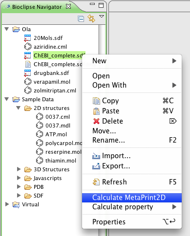
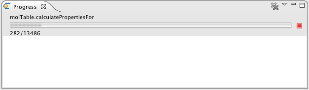

MetaPrint2D - Batch processing
For processing large collections of molecules and store the results as property,
for example an SDFile containing thousands of molecules, the batch processing functionality of MetaPrint2D is handy.
Right-click on e.g. an SDFile and select Calculate MetaPrint2D. This will start a job in the background to process the file, and store the results as a property.

Follow progress of background jobs
To reveal the progress view, shoose in the main menu option Window > Show View > Progress View

The Progress View in Bioclipse